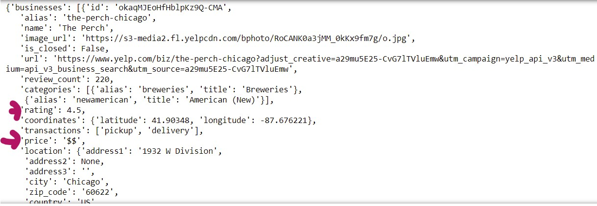

Information about businesses in any neighborhood can reflect the value and popularity. Some extra features can be added in dataset extracting price and ratings of restaurants. The ratings given by people in Yelp and the prices of restaurants can be extracted using Yelp API. API key should be generated to be able to extract information from Yelp by signing up and creating an app. Following code snippet extracts restaurants information from the city of Chicago:

The data are in JSON format with all information about business in the searched city as shown below where you can see the ratings and price which we are interested to extract.
We have this detail information of 50 businesses in the city of Chicago.
Now let’s extract restaurant ratings, price, and zip code from the raw JSON file so that these datasets could be used for given zip code.
This is a dataframe of extracted yelp ratings and price for corresponding zip codes.
Yelp price column contains some missing values and as well as the symbolic representation price. The more the $ symbols in the price, more expensive the restaurant. Converting price symbols and grouping data by zip code to get the mean values of ratings and price for a given zip code, the final dataframe with yelp ratings and yelp price:
These two features would add value to any type of dataset involving zip code.
Machine Learning and Real State: Predicting Rental Prices in Amsterdam